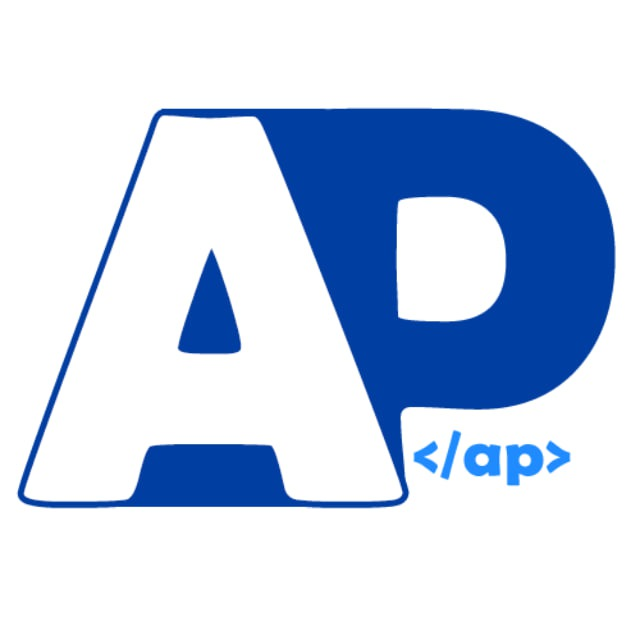
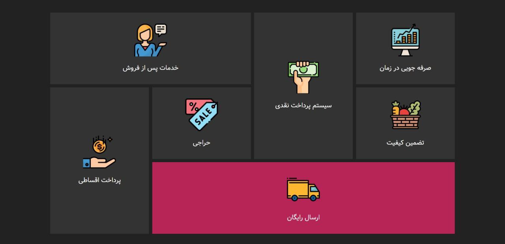

Research
My research interests include machine learning, computer vision, image and video processing, and digital signal processing. I'm fascinated by how these technologies can teach computers to see and understand the world around them.
Publications
Experience
|

|
|

|
Arman Pardazan Novin
Webpage Designer Intern
Ensured cross-browser compatibility and optimized performance for all web pages. Conducted regular code reviews and debugging to maintain high-quality standards. Stayed updated on industry trends and best practices in web design and development.
- Leveraged HTML and CSS skills to design and develop dynamic web pages.
- Implemented responsive design principles for seamless user experience across various devices and screen sizes.
|
|

|
Northwestern University
Teaching Assistant
Actively contributed to instructional delivery and facilitation of discussions. Evaluated assignments, projects, and exams, offering constructive feedback to students.
- Supported the development and implementation of course curriculum and assessments.
- Conducted one-on-one sessions to address individual student needs and questions.
|
|